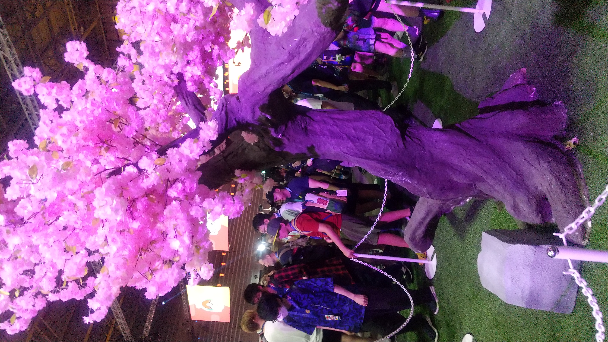
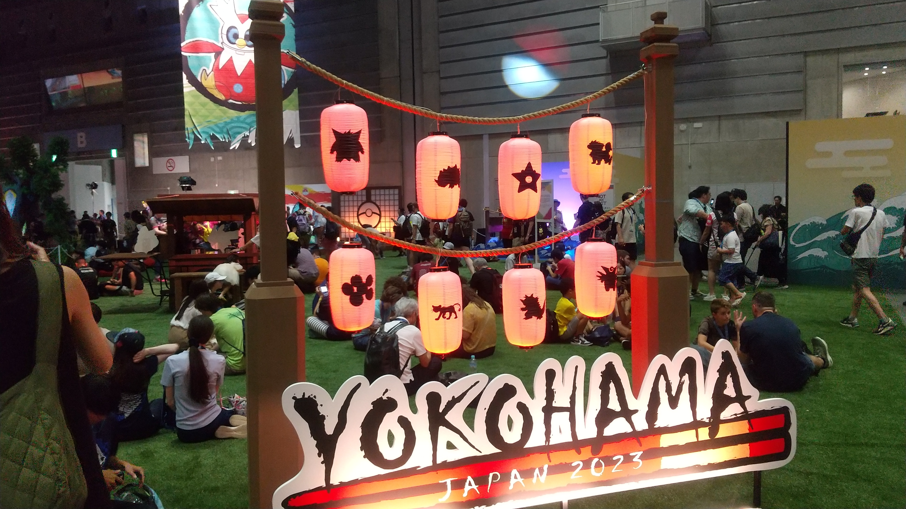
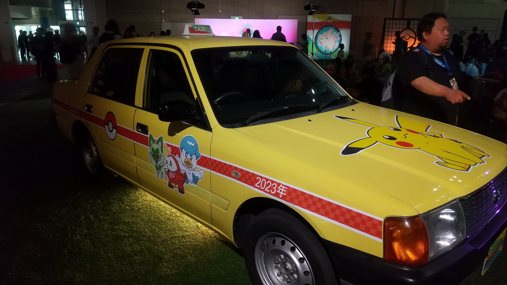
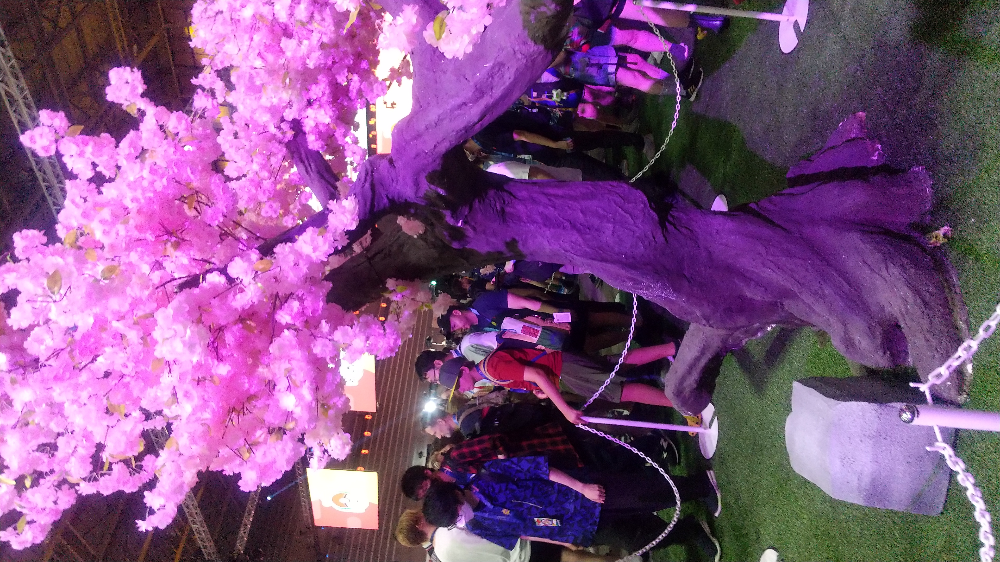
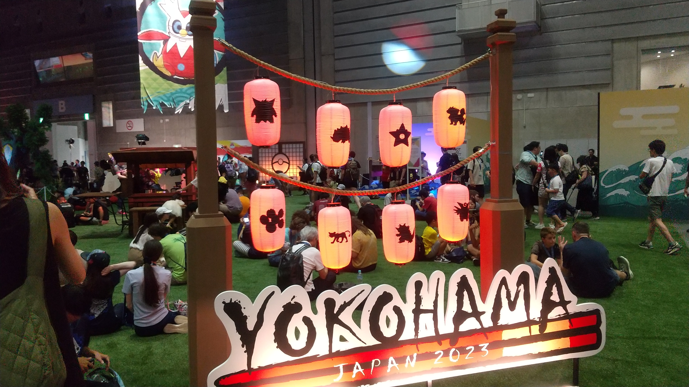
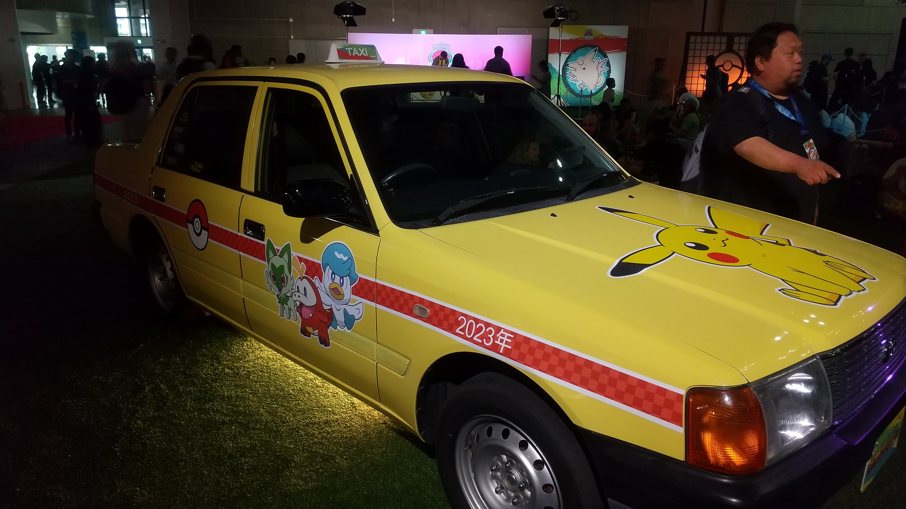
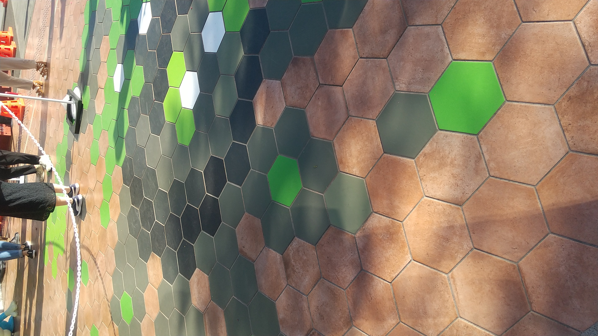
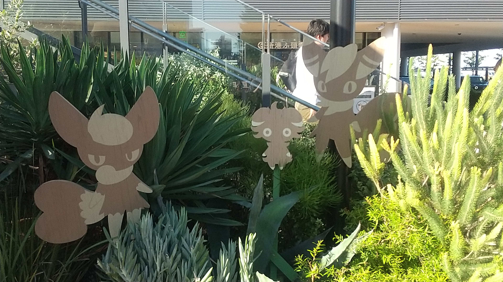
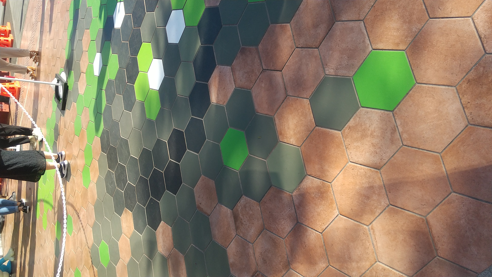
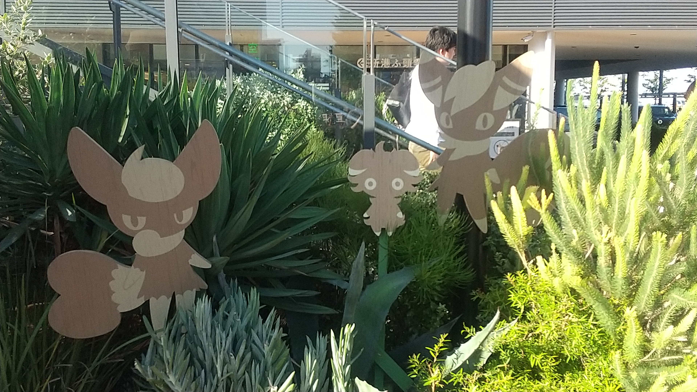

くーちゃんのクチバシティ訪問
ハローみんな元気？今日はなんとクチバシティ(※1)に行ってポケモンの世界大会を見に行くわよ！
......どこか分からない？それはそうよね。
じゃ～ん！横浜のみなとみらいに到着！今年のポケモンの世界大会はなんと日本開催！だからみなとみらいにはポケモンがいっぱいいるんですって！ ホゲータとニャオハがかわいい！よーしみなとみらい探索していくわよ！
みてみて！エスカレーターにもポケモン！なんか凄いピカピカしてるわね。お金持ちのポケモンなのかな？
クイーンズスクウェアの入口よ！人がいっぱい！世界大会ともあって外国の方々もたくさん来てるわ。ここから長ーいエスカレーターに乗って上に向かうのね。
のぼった後にとっても長い廊下を歩いたら...伝説のポケモンたちが待っていたわ！コライドンとミライドンだっけ？かわいいわね！私も乗ってみたいなあ。免許いるのかしら？
パシフィコ横浜に着いたわよ！ところどころポケモンがいっぱい！
あ！でっかいピカチュウ！キョダイマックスってこと？
中に入ると...うわ！そらをとぶピカチュウ(※2)よ！かわいい～！
近くで見るとこんな感じ！うわでっか～！
ちょっとぼやけたけどあれが優勝トロフィーよ。すごいわねえ。
会場はこんな感じ！実際にステージの上でゲームとかカードとか闘うんだって。
あら～かわいい提灯！知ってるポケモンはいた？
ちなみに入るときはこんなの貰ってるわよ！
 





展示も色々あるわね！見てるだけで楽しいわ！ポケモンタクシー乗ってみたいわね。無賃乗車でヤンキー出てきて逆に金を巻き上げるなんて事起きたりしないよね？(※3)
展示以外にも、サブイベントもやってるみたい！でも英語読めないと厳しいかも？まあなんとかなるわ！
これは世界大会の会場外の様子よ！どこもかしこもポケモンばっかりね。ゴミ箱までポケモンなの？
これはポケモンカードのアートワークが飾ってあるわよ！デパート中にあるんですって！
これはミュウツーね！4枚のカードが1つになって1匹のポケモンになるんだって。(※4)
これはアローラの守り神ね！気持ち人だかりが多かったわ！(※5)
あ！ピカチュウ！黄色い花びらで作ってるらしいわ！
 



外ではこんな感じにポケモン達が隠れていたわ！探すの大変だった！
ヘンな野菜のオブジェもあったわ！なにこれ？
最後にポケモンセンターに寄ってきたわ！ぬいぐるみいっぱいでかわいかったわよ！
アンノーンが並んでいるのはシュールだったわ。
ということでクチバシティもとい横浜探索はこれにて終了！
写真みたら分かる通りこれ2023年の様子よ。アップロードに1年もかかっちゃった！サボってただけ？こら、そこうるさい！
今年はホノルルで世界大会だって。流石に見に行けないなあ。
今度は多分去年の北海道旅行をあげると思うわ。じゃあまたね～！
※2 え、そらをとぶピカチュウって初代からいたのね...。最近ポケモンカードになったり、またゲームでも出たくらい人気らしいわよ！
※3 ミアレシティではそういうこともあったみたい！怖いわね...。
※4 「アザラシの推しです。かっこいいよね！」らしいわよ？
※5 「むっちゃお世話になりました。この守り神100回は使った。」らしいわよ？